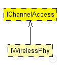

This documentation is released under the Creative Commons license
This documentation is released under the Creative Commons licenseCommon parameters for modules based on ChannelAccess class
The following diagram shows usage relationships between types. Unresolved types are missing from the diagram.
The following diagram shows inheritance relationships for this type. Unresolved types are missing from the diagram.
| Name | Type | Description |
|---|---|---|
| IWirelessPhy | module interface |
Wireless physical layer module interface. |
| Name | Type | Default value | Description |
|---|---|---|---|
| antennaOffsetX | double |
Offset of antenna position (x direction) with respect to what a BaseMobility module will tell us |
|
| antennaOffsetY | double |
Offset of antenna position (y direction) with respect to what a BaseMobility module will tell us |
|
| antennaOffsetZ | double |
Offset of antenna position (z direction) with respect to what a BaseMobility module will tell us |
|
| antennaOffsetYaw | double |
Offset of antenna orientation (yaw) with respect to what a BaseMobility module will tell us |
// Common parameters for modules based on ChannelAccess class moduleinterface IChannelAccess { parameters: double antennaOffsetX @unit("m"); // Offset of antenna position (x direction) with respect to what a BaseMobility module will tell us double antennaOffsetY @unit("m"); // Offset of antenna position (y direction) with respect to what a BaseMobility module will tell us double antennaOffsetZ @unit("m"); // Offset of antenna position (z direction) with respect to what a BaseMobility module will tell us double antennaOffsetYaw @unit("rad"); // Offset of antenna orientation (yaw) with respect to what a BaseMobility module will tell us }
This documentation is released under the Creative Commons license